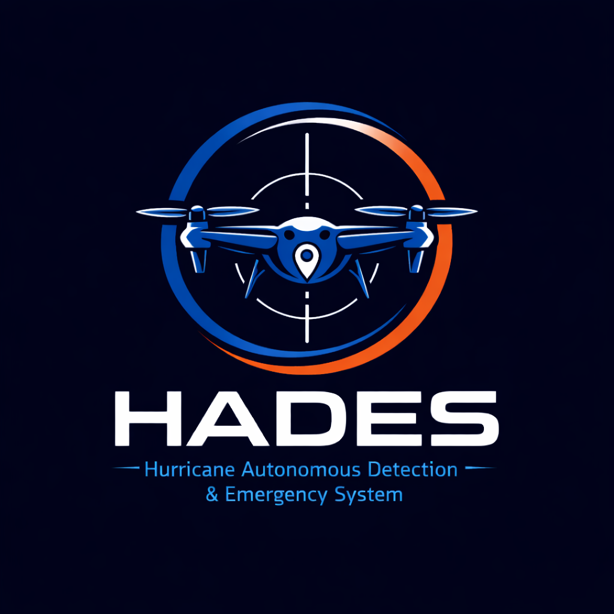

Autonomous AI drones that find hurricane survivors in real time, cutting search time from hours to minutes.
What makes us right for this: our connection to the problem is personal. Ryan and Arya's accounts of Helene drove everything we built.
Half of hurricane deaths come after the storm. A $700 drone that finds people in minutes, not days, changes who makes it.